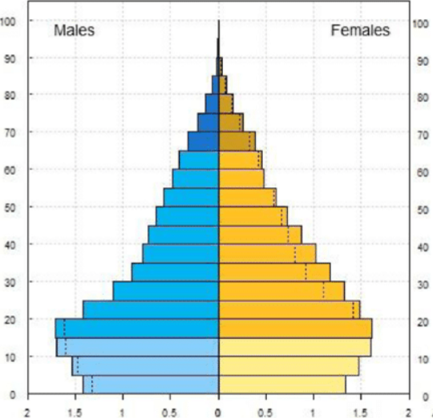

The Exam Battle Plan & Top Strategies
Time is your most valuable resource. Stick to this schedule for a 150-mark paper to stay in control:
- First 10 mins: Reading & Planning
- Read the instructions and the essay question (Question 3) first.
- Skim all sources, deciding your stance for the essay.
- Create your marked essay plan on your script. This is worth marks!
- Next 90 mins: Content Questions (Q1 & Q2)
- Allocate roughly 1 mark per minute. A 30-mark question should take about 30 minutes.
- Tackle these questions methodically. They are often quicker marks than the essay.
- Next 40 mins: Write The Essay (Q3)
- Stick to your plan. Write focused, themed paragraphs.
- Ensure you integrate source material and your own knowledge.
- Final 10 mins: Review & Edit
- Quickly read through your essay for clarity, scientific language, and silly mistakes.
- Check that you have answered all parts of every question.
IEB questions use specific words to ask for specific things. Here's what they mean:
- "Evaluate" / "Discuss": You MUST discuss both sides of the argument. Present facts for and against, then conclude with your supported stance.
- "To what extent": Judge how much or how far something is true. Acknowledge limitations and provide a balanced view. It's not a simple yes/no.
- "Compare": State the similarities AND differences between two concepts. Use a table if appropriate.
- "Assess": Make a judgment on the value, importance, or quality of something based on evidence.
- "Explain the relationship": Describe how two or more things are connected and how one affects the other.
Content Mastery: Key Concepts
- Species: A group of similar organisms that can interbreed to produce fertile viable offspring.
- Population: A group of organisms of the same species living in a specific area at a specific time.
- Community: All the different populations of different species interacting in a specific area.
- Ecosystem: The interaction between a community (biotic factors) and its non-living environment (abiotic factors).
- Habitat: The specific environment or 'home' where a species normally lives.
- Population Size vs. Density: Size is the total number of individuals. Density is the number of individuals per unit area (e.g., 5 elephants per km²).
Population size is determined by four key factors. Remember NIME:
- Natality: Birth Rate (Increases population).
- Immigration: Individuals moving IN (Increases population).
- Mortality: Death Rate (Decreases population).
- Emigration: Individuals moving OUT (Decreases population).
Formula: Population Change = (Natality + Immigration) - (Mortality + Emigration)
A population will:
Increase if (N+I) > (M+E).
Decrease if (M+E) > (N+I).
Remain Stable if (N+I) = (M+E).
Carrying Capacity (K): The maximum number of individuals an ecosystem can sustainably support. This limit is set by environmental resistance.
Environmental Resistance: The sum of all limiting factors that prevent a population from reaching its biotic potential. These can be density-dependent or independent.
J-Curve (Exponential): Occurs with unlimited resources and no limiting factors. Leads to a rapid increase followed by a sudden population crash when resources are depleted. Common in bacteria or algae blooms.
S-Curve (Logistic): The more realistic model for most populations.
- Lag Phase: Slow start as the population adapts to the environment.
- Exponential (Log) Phase: Rapid growth as natality >> mortality. Few limiting factors.
- Deceleration Phase: Growth slows as environmental resistance increases (e.g., resource scarcity, predation).
- Stationary Phase: Population fluctuates around the carrying capacity (K). Natality + Immigration ≈ Mortality + Emigration. This is a stable population.
An unstable population occurs if it far overshoots K, damaging the environment and causing K itself to decrease, leading to a crash.
Density-Dependent Factors: Their effect increases as population density increases. They are biotic factors that regulate population size.
- Competition: For food, water, space, mates.
- Predation: Predators are more successful when prey is abundant.
- Disease & Parasitism: Spread more easily in crowded conditions.
- Accumulation of Waste: Can become toxic at high densities.
Density-Independent Factors: Affect a population regardless of its density. They are usually abiotic factors.
- Natural Disasters: Fires, floods, droughts, volcanic eruptions.
- Climate Change: Long-term shifts in temperature and weather patterns.
- Human Activities: Pollution, habitat destruction.
Direct Method (Census): Counting every individual. Only for large, slow, or stationary organisms in a small, defined area.
Indirect Methods (Estimation): Used when a census is impractical.
- Quadrat Method: For plants or slow-moving invertebrates. A square frame is placed randomly to count organisms in a sample area.
Formula: Avg. count per quadrat × (Total area / Quadrat area)
Reliability depends on: Large number of quadrats, random placement, and consistent quadrat size. - Mark-Recapture Method: For mobile animals.
Formula: P = (M x C) / R
P = Estimated Population Size
M = Total initially caught & Marked
C = Total Caught in the second sample
R = Number of marked animals Recaptured
Accuracy depends on: The mark not harming the animal or affecting its behaviour; sufficient time for marked individuals to mix freely; no significant NIME between samples; the mark is permanent for the study period.
Survivorship Curves show the proportion of individuals surviving to each age for a given species.
- Type I: Low death rate in early/middle life, high death rate in old age. Few offspring, high parental care. Example: Humans, elephants (K-strategists).
- Type II: Constant death rate regardless of age. Example: Birds, lizards.
- Type III: High death rate for the young, but those that survive live long lives. Many offspring, no parental care. Example: Oysters, trees, insects (r-strategists).
r-strategists vs K-strategists
| Feature | r-strategist | K-strategist |
|---|---|---|
| Environment | Unstable, unpredictable | Stable, predictable |
| Offspring | Many, small-sized | Few, large-sized |
| Parental Care | Little to none | Extensive |
| Lifespan | Short | Long |
| Survivorship | Type III | Type I or II |
| Example | Insects, bacteria, weeds | Apes, whales, elephants |
Interactions within a community can be positive, negative, or neutral for the species involved.
Predation (+/-)
A predator hunts, kills, and eats prey. This interaction regulates both populations in a cyclical pattern: the prey population peaks first, providing more food for predators, whose population then peaks. This increased predation causes the prey population to decline, followed by a decline in the predator population due to food scarcity.
Competition (-/-)
Occurs when two or more organisms require the same limited resources (e.g., food, water, territory).
- Intraspecific: Competition between members of the same species.
- Interspecific: Competition between members of different species. This can lead to:
- Competitive Exclusion: One species outcompetes the other, leading to the local extinction of the weaker competitor.
- Resource Partitioning: Species evolve to use resources differently to avoid direct competition (e.g., feeding at different times, in different parts of a tree). This allows for coexistence.
Symbiosis
A close, long-term interaction between two different species.
- Mutualism (+/+): Both species benefit (e.g., bees pollinating flowers).
- Commensalism (+/0): One benefits, the other is unaffected (e.g., barnacles on a whale).
- Parasitism (+/-): One (parasite) benefits, the other (host) is harmed (e.g., tapeworm in a human).
Living in groups can improve survival and reproductive success by making it easier to find food, avoid predators, and raise young.
- Herds/Flocks: A key defense against predation. Benefits include "many eyes" to spot danger, the dilution effect (lower individual chance of being attacked), and protection of the young and vulnerable.
- Packs (e.g., Wild Dogs): A successful hunting strategy. Members cooperate to chase down and kill prey larger than themselves, and the kill is shared. They often care for the sick, old, and young.
- Dominant Breeding Pairs: A strict social hierarchy where only the alpha male and female breed (e.g., wild dogs). This prevents overpopulation within the pack and ensures the strongest genes are passed on.
- Eusociality (Castes): The highest level of social organisation, seen in insects like ants, bees, and termites. There is a division of labour between a reproductive queen and non-reproductive workers and soldiers who care for the colony.
The predictable process of change in the species structure of an ecological community over time.
- Primary Succession: Begins on bare rock where no life or soil existed before (e.g., after a volcanic eruption). It starts with pioneer species (e.g., lichens) that are hardy, can tolerate harsh conditions, and create the first layer of soil as they die and decompose.
- Secondary Succession: Occurs after a disturbance (like a fire or logging) where the soil remains intact. It is much faster than primary succession.
The process moves from Pioneer Species → Intermediate Species (grasses, shrubs) → a stable Climax Community (e.g., mature forest), which has high biodiversity and complex interactions.
Ecological Footprint: The measure of human demand on Earth's ecosystems. It's the amount of biologically productive land and water area needed to produce all the resources an individual, population or activity consumes, and to absorb the waste they generate.
- Key SA Stat: South Africa has an ecological footprint of about 2.6 global hectares per person, while the Earth's biocapacity is only about 1.6 gha per person. We are in an "ecological overdraft."
- Overpopulation vs. Overconsumption: Developing nations often face issues of rapid population growth (overpopulation), straining local resources. Developed nations drive global environmental damage through high rates of resource use per person (overconsumption).
- Key Global Stat: Developed nations make up ~20% of the world's population but consume over 50% of its resources.
Age-Gender Pyramids
These graphs show the age and sex structure of a population.
- Rapidly Growing (Pyramid Shape): Wide base, narrow top. High birth rate, high death rate, short life expectancy. Typical of developing countries. Large number of young dependents.
- Stable (Column Shape): Base is similar in width to the middle. Lower birth and death rates. Typical of developed countries. Balanced age structure.
- Declining (Narrow Base): Base is narrower than the middle. Very low birth rate, long life expectancy. Typical of some affluent European countries. Large number of elderly dependents.
Biodiversity is the variety of life on Earth, at three levels: genetic (variety of genes), species (variety of species), and ecosystem (variety of ecosystems).
Why is Biodiversity Important?
- Provides essential resources (food, medicine, raw materials).
- Maintains ecosystem services (pollination, clean water, climate regulation).
- Boosts economic value through tourism (ecotourism).
- Has aesthetic and cultural value.
Major Threats to Biodiversity (HIPPO)
- Habitat Destruction: Deforestation, urbanisation, agriculture.
- Invasive Alien Species: Outcompete native species (e.g., Port Jackson in the fynbos).
- Pollution: Plastic, chemical, and air pollution harm organisms and ecosystems.
- Population Growth (Human): Increases demand for all resources.
- Over-exploitation: Overfishing, over-harvesting, poaching (e.g., rhinos, abalone).
Conservation Strategies
- Sustainable Use: Using resources at a rate that allows them to replenish.
- Conservation of Indigenous Knowledge: Using traditional knowledge for sustainable practices (e.g., medicinal plants).
- Protected Areas: National parks and reserves.
- Ecotourism: Tourism that is environmentally responsible and benefits local communities.
- Legislation: International agreements like CITES to control trade in endangered species.
- Ex-situ conservation: Protecting species outside their natural habitat (e.g., zoos, botanical gardens, seed banks).
The 40-Mark Essay Fortress
Example Essay Prompt
"Consider the following statement: South Africa needs to implement a policy limiting the number of children allowed per family. Using the source material provided as well as your own knowledge, discuss your opinion on the statement..."
Your plan WILL be marked. Before you write a single paragraph, create a table or mind map. Use one colour for points FOR your argument and another for points AGAINST (counter-arguments). This example is from the marking guide.
Example Plan: For vs. Against a Population Policy
| Arguments FOR the Policy | Arguments AGAINST the Policy (Counter-Arguments) |
|---|---|
| Source A/E: High birth rate, decreasing mortality/infant mortality, and rising life expectancy leads to population growth. | Source B/H: Growth rate is slowing (only 0.89% in 2015); China's policy had negative consequences (labour shortage, skewed sex ratio). |
| Source B/D/G: Population has trebled since 1950, causing stress on resources (44 people/m²). We exceed our sustainable footprint of 1.8 ha. | Source C: Unfavourable dependency ratio means pressure on the working population is already high; this might worsen it. |
| Source C: High dependency ratio puts pressure on the workforce, education, and healthcare systems. | Source F: Such policies can be unethical and violate human rights (e.g., forced sterilisation). |
| Own Knowledge: Links to global warming, desertification, lower carrying capacity, and high unemployment. | Own Knowledge: Education (especially of women) can reduce birth rates without coercion. Religious objections to contraception/policies. |
Introduction (Example from PowerPoint)
The rapid growth of the human population has placed excessive strain on the planet which poses potentially devastating consequences for human survival and that of other species. This essay will argue that definitive action in reducing human population size is thus necessary to ensure the continuation of Earth and all life forms it supports, by examining ecological pressures, socio-economic strain, and carrying capacity.
The Perfect Paragraph Structure
- Topic Sentence: State the main point of the paragraph.
- Fact 1 (from a source): Present a piece of data or evidence.
- Explanation (own knowledge): Explain what this fact means and link it to a biological concept (e.g., carrying capacity, biodiversity loss).
- Fact 2/3 (source/own knowledge): Add more evidence to strengthen your point.
- Counter-Argument & Rebuttal: Acknowledge the other side, then defeat it. "Although some argue that..., the evidence strongly suggests..."
- Concluding Sentence: Link the paragraph back to your main argument.
Conclusion (Example from PowerPoint)
Ultimately, with the consideration of the impact of human overpopulation on overconsumption and environmental degradation, the pressing need arises to decrease the size of human population growth so as to ensure the continuation of planet Earth and all of its life forms it supports.
This is how your essay is marked. Aim for the 4-mark column in every category!
| Criteria | 1 Mark | 2 Marks | 3 Marks | 4 Marks | Max |
|---|---|---|---|---|---|
| Planning (x2) | Decision given; key points present. | Key points developed for/against. | Key points developed & Source refs identified. | - | 6 |
| Use of Knowledge from Sources (x2) | Up to 1/4 of potential detail used. | Up to 1/2 of potential detail used. | Up to 3/4 of potential detail used. | Source detail - very close to full potential used. | 8 |
| Use of Own Knowledge | Some facts beyond source. | Many facts beyond source. | Some facts beyond source, integrated into argument. | Many facts beyond source, integrated into argument. | 4 |
| Quality of Argument (x2) | Facts with little linkage or reasoning. | Reasoning correct but hard to follow. | Supports position, reasoning is clear. | Strongly supports position, flow is logical, well-integrated. | 8 |
| Fairness (Counter Opinions) | 1-2 counter opinions given. | 3-4 counter opinions given. | Integration of 1-2 counter opinions into argument. | Integration of 3-4 counter opinions into argument. | 4 |
| Presentation | Almost unintelligible, unscientific tone. | Tone, language, terminology weak. | Tone is consistent and scientific, good language. | Tone is mature, excellent language, correct paragraphing. | 4 |
| Scientific Merit | Essay shows academic rigour, accurate reasoning, insight and cohesiveness. | 2 | |||
| Decision | Vague or changed position. | Clear decision made. | 2 | ||
| TOTAL | 40 | ||||
DO...
- Start with an introduction stating your decision.
- Be as scientific as possible with your language.
- Structure paragraphs by theme.
- Integrate counter-arguments using 'although' or 'however'.
- During PLANNING, write "Source A says...".
- In the ESSAY, write "Evidence suggests..." or "Scientific data shows...".
DON'T...
- Use emotive language ("It's devastating...").
- Pose any questions in your essay.
- Use direct quotes from the sources.
- Use slang, contractions (don't, can't), or exclamation marks!
- Waffle or use broad generalizations.
- Refer to sources by name in the essay (e.g., "Source A says...").
Practice Zone: Test Your Knowledge
Let's apply what you've learned to actual exam-style questions. Try to answer first, then click to reveal the solution.
The average mass of a fully grown leopard is about 45 kg. Using information from a graph showing leopard biomass peaking at 550-600 kg, calculate the largest number of leopards that existed. Show all working.
Answer from Marking Guide:
Calculation: (550 to 600 kg) ÷ 45 kg/leopard ✓
= 12.2 to 13.3 leopards.
Final Answer: 12 to 13 leopards ✓ (As you cannot have a fraction of a leopard)
A student caught and marked (M) 45 toadlets. The next day he captured a new total of (C) 65 toadlets, of which (R) 20 had the mark. Calculate the estimated size of the population (P). Show ALL calculations.
Answer from Marking Guide:
Formula: P = (M x C) / R ✓
Substitution: P = (45 x 65) / 20 ✓
P = 2925 / 20
P = 146.25
Final Answer: ≈ 146 toadlets ✓ (Round to the nearest whole number)
Study the age-gender pyramid below for Country X.
1. Is the population of Country X rapidly growing, stable, or declining? (1)
2. Provide TWO reasons for your answer in question 1, using evidence from the graph. (2)
3. State ONE socio-economic challenge this country might face due to its population structure. (1)
Model Answer:
1. Rapidly growing. ✓
2. Reasons:
- The pyramid has a very wide base, indicating a high birth rate. ✓
- The pyramid narrows quickly with each successive age group, indicating a high death rate / low life expectancy. ✓
3. Any ONE of: High pressure on education systems / High unemployment in the future / High dependency ratio with many young people to support / Strain on healthcare services. ✓